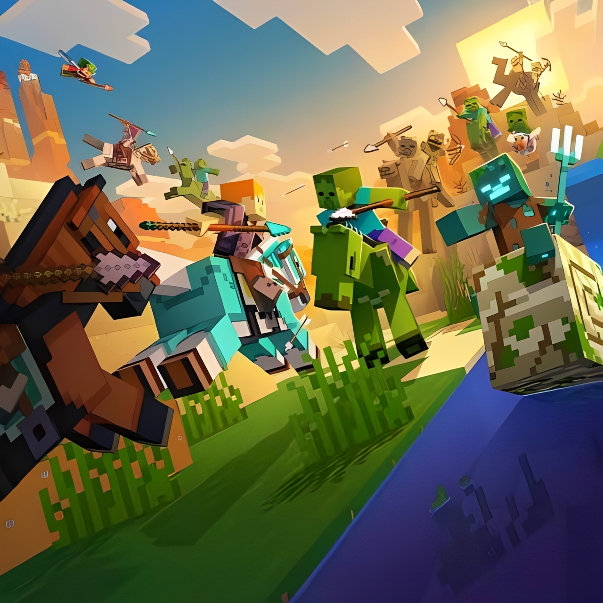
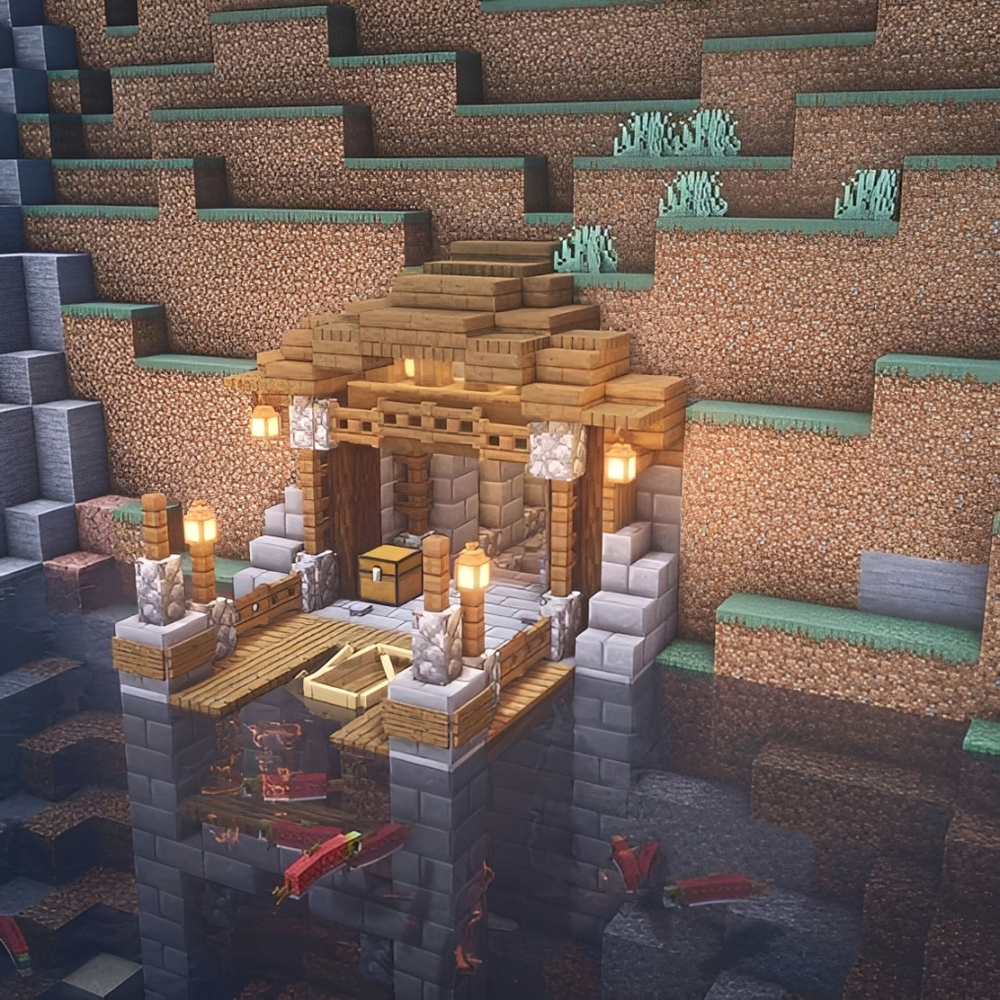
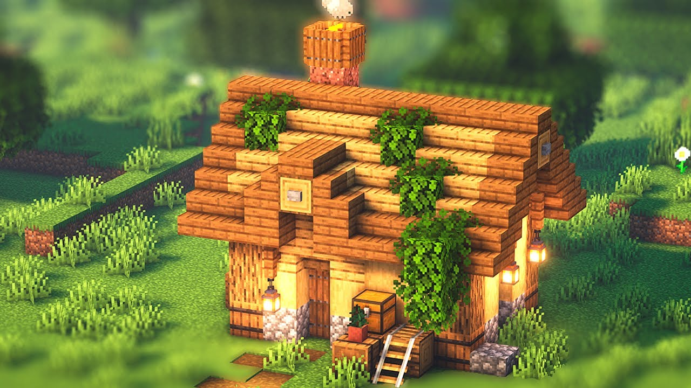
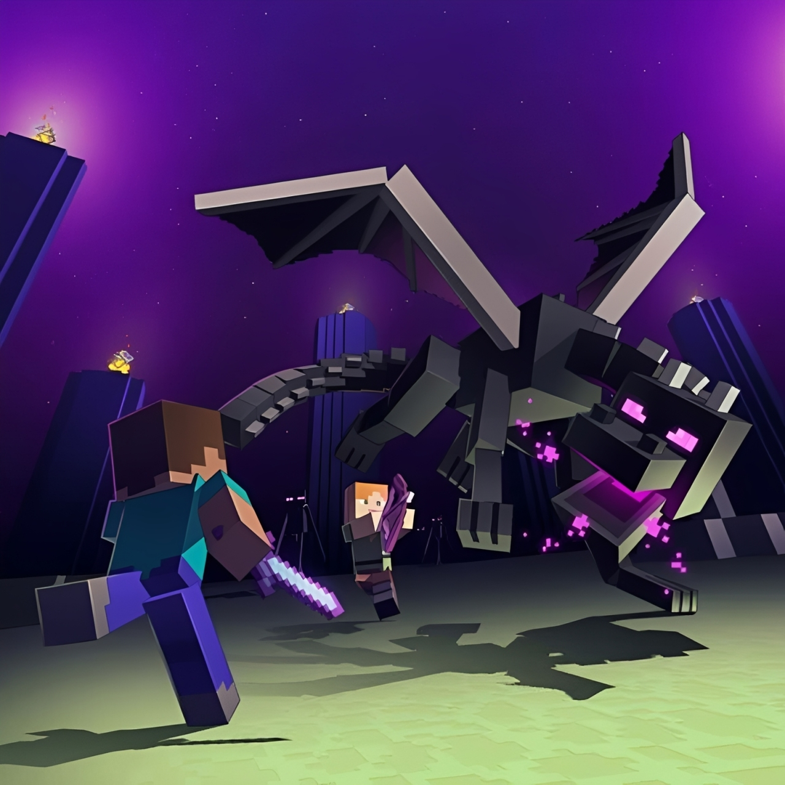
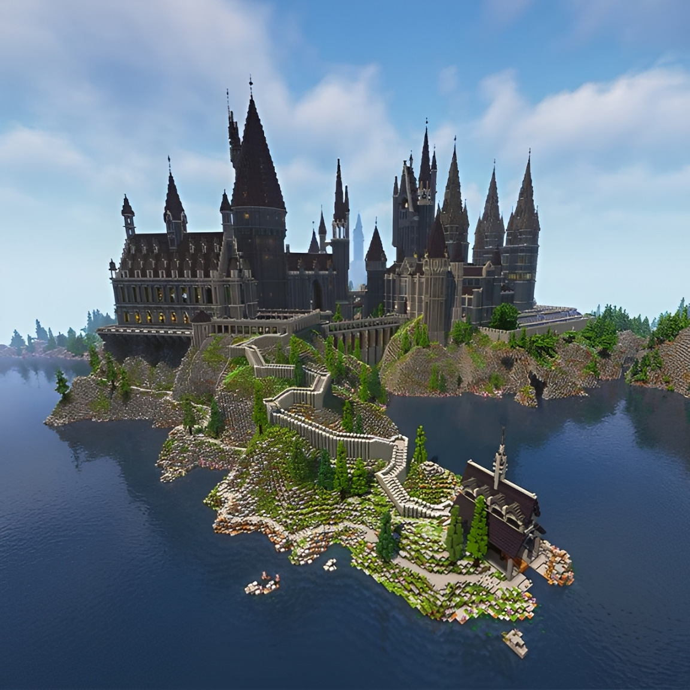
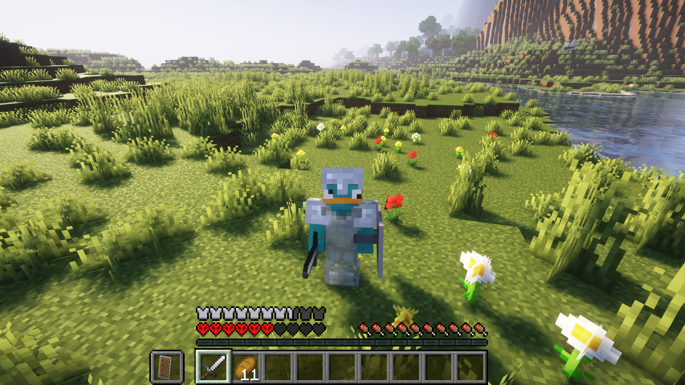
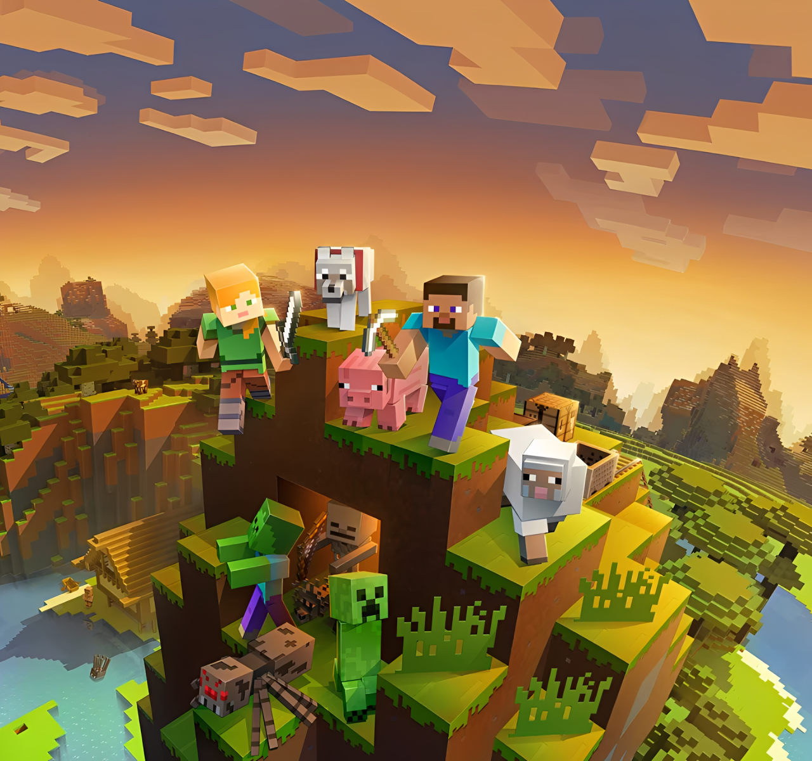

5
Modos de Jogo
Guia Completo dos Modos de Jogo
Cada modo de jogo oferece uma experiência única. Sobreviva contra monstros, construa sem limites, enfrente desafios extremos ou explore o mundo sem restrições. Conheça todas as características de Survival, Creative, Hardcore, Adventure e Spectator.

Modos de Jogo
Cópias Vendidas
Jogadores Mensais
Países com Jogadores
Os modos de jogo definem como o jogador irá interagir com o universo de Minecraft. Cada um possui regras, objetivos e mecânicas próprias, permitindo desde uma sobrevivência desafiadora até construções ilimitadas ou apenas a observação do mundo.
Reúna recursos, enfrente criaturas hostis, administre sua fome e evolua seus equipamentos para permanecer vivo.
Construa qualquer estrutura utilizando blocos infinitos e com liberdade total para voar pelo mapa.
Alguns modos são voltados para exploração, observação e mapas personalizados criados pela comunidade.
Cada modo de jogo foi desenvolvido para oferecer uma experiência diferente dentro do universo de Minecraft. Clique em um dos modos abaixo para conhecer suas características.

Sobreviva coletando recursos, enfrentando monstros e administrando sua fome.
Saiba mais
Construa qualquer estrutura utilizando recursos infinitos e liberdade para voar.
Saiba mais
Apenas uma vida. Ao morrer, o mundo é perdido ou passa para o modo espectador.
Saiba mais
Ideal para mapas personalizados criados pela comunidade.
Saiba mais
Observe o mundo livremente atravessando blocos e sem interagir com o ambiente.
Saiba maisO modo Survival é considerado a experiência clássica do Minecraft. Nele, o jogador precisa explorar o mundo, coletar recursos, fabricar ferramentas, construir abrigos e sobreviver aos perigos encontrados durante a aventura.

O principal objetivo é sobreviver, evoluir seus equipamentos e derrotar o Ender Dragon, chefe final do jogo.
Pode ser configurada entre Pacífico, Fácil, Normal ou Difícil, alterando o comportamento dos monstros e a sobrevivência do jogador.
| Item | Função | Prioridade |
|---|---|---|
| Madeira | Primeiro recurso para criar ferramentas. | Alta |
| Picareta | Permite minerar pedras e minérios. | Alta |
| Espada | Defesa contra criaturas hostis. | Alta |
| Fornalha | Cozinhar alimentos e fundir minérios. | Média |
| Cama | Definir ponto de renascimento. | Alta |
Algumas recomendações para quem está começando sua jornada no Minecraft.
Derrube árvores logo no início para fabricar sua bancada de trabalho, ferramentas e outros itens essenciais.
Produza uma picareta, um machado e uma espada para facilitar a exploração e garantir sua sobrevivência.
Cace animais ou plante alimentos para manter sua barra de fome sempre cheia.
Antes da primeira noite, construa um local seguro para se proteger dos mobs hostis.
Uma sequência sugerida para aproveitar toda a experiência do Minecraft.
Colete madeira, faça ferramentas básicas, construa um abrigo e consiga comida.
Explore cavernas para encontrar ferro, carvão, ouro, diamantes e outros recursos importantes.
Construa um portal para o Nether e obtenha Blaze Rods e outros materiais necessários para avançar.
Encontre a Stronghold, ative o portal e enfrente o Ender Dragon para concluir a progressão principal do jogo.



O modo Creative foi desenvolvido para jogadores que desejam construir livremente sem se preocupar com sobrevivência. Todos os blocos e itens ficam disponíveis instantaneamente, permitindo criar desde pequenas casas até enormes cidades e máquinas complexas utilizando Redstone.

Construir livremente, testar ideias, criar mapas personalizados e explorar toda a criatividade sem limitações de recursos.
O modo Hardcore é a versão mais desafiadora do Minecraft. Nele, o jogador possui apenas uma vida e a dificuldade permanece travada no nível Difícil. Caso morra, não será possível renascer normalmente naquele mundo.

Sobreviver o maior tempo possível enfrentando todos os desafios do jogo sem morrer, evoluindo equipamentos e derrotando o Ender Dragon.
| Característica | Status |
|---|---|
| Respawn | Não disponível |
| Dificuldade | Difícil (fixa) |
| Barra de fome | Ativada |
| Monstros hostis | Ativados |
| Conquistas | Disponíveis |
| Objetivo final | Derrotar o Ender Dragon |
O modo Adventure foi criado para proporcionar experiências em mapas personalizados desenvolvidos pela comunidade. Diferente do Survival, o jogador possui diversas limitações, permitindo que os criadores controlem como cada desafio deve ser resolvido.

Explorar mapas criados por outros jogadores, resolver desafios, completar missões e seguir a história definida pelo criador do mapa.
| Recurso | Disponibilidade |
|---|---|
| Quebrar blocos | Limitado |
| Colocar blocos | Limitado |
| Combate | Permitido |
| Exploração | Livre |
| Missões | Suportadas |
| Mapas personalizados | Totalmente compatível |
O modo Spectator (Espectador) permite observar o mundo do Minecraft sem interagir com ele. É utilizado principalmente para explorar mapas, acompanhar partidas multiplayer, criar conteúdos para vídeos ou analisar construções sem modificar o ambiente.

Explorar o mundo sem interferir na jogabilidade, podendo atravessar blocos, observar outros jogadores e visualizar áreas inacessíveis normalmente.
| Ação | Disponível |
|---|---|
| Voar | Sim |
| Atravessar blocos | Sim |
| Quebrar blocos | Não |
| Construir | Não |
| Receber dano | Não |
| Interagir com mobs | Não |
A tabela abaixo apresenta as principais diferenças entre os cinco modos de jogo disponíveis no Minecraft.
| Característica | Survival | Creative | Hardcore | Adventure | Spectator |
|---|---|---|---|---|---|
| Barra de Vida | ✔ | ✖ | ✔ | ✔ | ✖ |
| Barra de Fome | ✔ | ✖ | ✔ | ✔ | ✖ |
| Voar | ✖ | ✔ | ✖ | ✖ | ✔ |
| Construir Livremente | ✔ | ✔ | ✔ | Limitado | ✖ |
| Quebrar Blocos | ✔ | ✔ | ✔ | Limitado | ✖ |
| Receber Dano | ✔ | Quase Nunca | ✔ | ✔ | ✖ |
| Respawn | ✔ | ✔ | ✖ | ✔ | Não se aplica |
| Ideal para Construção | Bom | Excelente | Regular | Regular | Não |
| Ideal para Exploração | Excelente | Bom | Excelente | Excelente | Excelente |
Recomendado para jogadores que gostam de desafios, progressão e sobrevivência.
Ideal para quem gosta de construir cidades, casas, castelos e testar mecanismos de Redstone.
Perfeito para jogadores experientes que procuram uma experiência intensa e desafiadora.
Excelente para explorar mapas criados pela comunidade e viver aventuras personalizadas.
Indicado para observar construções, gravar vídeos ou administrar servidores.
O modo Survival é considerado o modo mais popular do Minecraft, sendo a experiência padrão da maioria dos jogadores.
O Hardcore é o mais difícil, pois possui apenas uma vida e a dificuldade permanece fixa no nível Difícil.
O Creative é o mais indicado, pois oferece recursos ilimitados e permite voar livremente pelo mapa.
Sim. Utilizando comandos ou configurações do mundo é possível alterar o modo de jogo, desde que os cheats estejam habilitados.
Não. No Adventure existem restrições para quebrar e colocar blocos, tornando-o ideal para mapas personalizados.
Ao longo do desenvolvimento do Minecraft, novos modos de jogo foram adicionados para oferecer experiências diferentes aos jogadores. A linha do tempo abaixo mostra quando cada modo passou a fazer parte do jogo.
O modo Survival foi introduzido nas primeiras versões do Minecraft, trazendo a proposta de sobreviver, coletar recursos, fabricar ferramentas e enfrentar criaturas hostis.
O modo Creative foi lançado para oferecer liberdade total aos jogadores, disponibilizando todos os blocos do jogo e permitindo construir sem limitações.
Criado para mapas personalizados, o modo Adventure impede que o jogador altere livremente o ambiente, preservando a experiência planejada pelos criadores dos mapas.
Ainda em 2011 foi lançado o modo Hardcore, oferecendo apenas uma vida e mantendo a dificuldade fixa no nível Difícil, tornando a sobrevivência muito mais desafiadora.
O modo Spectator foi adicionado para permitir que jogadores observem o mundo sem interferir na jogabilidade, sendo muito utilizado em servidores, gravações e transmissões.